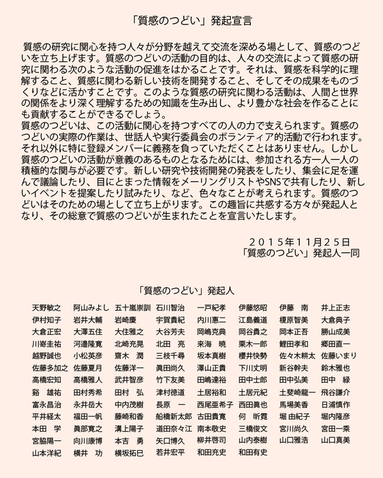

「質感のつどい」とは
質感のつどいは、質感の科学的な理解を深め、質感に関わる技術の発展を促進する目的で作られた、質感に関心を持つ人の情報交換の場です。２０１５年１１月に発足しました。
質感のつどいの活動内容：質感研究に関心を持つ人たちがネット等で情報交換を行うための場を維持すると共に、年１回公開フォーラムを開催し研究交流会を行います。ネットを利用した情報交換の場としては、この「質感のつどい」ホームページの他、「質感のつどい」Facebook、「質感のつどい」メーリングリストがあります。ホームページには一般の方もイベント情報の投稿が可能です。またメーリングリスト（ＭＬ）に加わっていただくと、ＭＬ上での自由な情報交換が可能です。これらの利用方法およびＭＬへの加入方法は「利用方法・連絡先」ページをご覧ください。また「質感のつどい」Facebookではどなたでもビジター投稿が可能ですので、質感関係の掲示版としてご利用いただければ幸いです。これら以外に、質感に関係するイベントなども計画しています。
質感のつどいの経緯：文部科学省の科学研究費新学術領域において、２０１０年に「質感脳情報学」領域が採択され、２０１５年３月に終了するまで工学、心理物理学、脳科学の研究者が連携して、質感に関する基礎から応用までを含む研究を進めました。この領域では参加した研究者が研究を進めると共に、社会に開かれた質感研究や技術に関する交流の場を作っていくことも目指しました。既存の学会等の組織で幅広い分野の研究者が集まって質感についての議論をできる場はありませんので、「質感のつどい」という名称で、そのような交流の場を立ち上げることにいたしました。２０１５年度に実施された「質感脳情報学」成果取りまとめのための終了領域の活動の中で具体化をめざし、２０１５年１１月２５日に「質感のつどい」第１回公開フォーラムを実施し活動を開始しました。
質感のつどいの運営：質感のつどいは、以下のリストにある世話人によりボランティア的に運営されています。質感のつどいＭＬへの参加や公開フォーラムへの参加は無料で、質感に興味を持つ人はどなたでも参加可能です。
「質感のつどい」世話人リスト（五十音順）
| 天野 敏之 | 和歌山大学 システム工学部 |
|---|---|
| 五十嵐 崇訓 | 花王株式会社 スキンケア研究所 |
| 一戸 紀孝 | 独立行政法人 国立精神・神経医療研究センター・神経研究所 |
| 伊村 知子 | 日本女子大学 人間社会学部 心理学科 |
| 岩井 大輔 | 大阪大学 大学院基礎工学研究科 |
| 大澤 五住 | 大阪大学 大学院生命機能研究科 |
| 岡本 正吾 | 名古屋大学 大学院工学研究科 機械理工学専攻 |
| 梶本 裕之 | 電気通信大学 大学院情報理工学研究科 総合情報学専攻 |
| 川嵜 圭祐 | 新潟大学 医学部 |
| 鯉田 孝和 | 豊橋技術科学大学 エレクトロニクス先端融合研究所 |
| 小松 英彦 | 玉川大学 脳科学研究所 |
| 櫻井 快勢 | （株）ドワンゴ会長室UEIリサーチ |
| 佐々木 耕太 | 大阪大学 大学院生命機能研究科 |
| 佐藤 いまり | 国立情報学研究所 コンテンツ科学研究系 |
| 佐藤 洋一 | 東京大学 生産技術研究所 |
| 澤山 正貴 | 日本電信電話株式会社 NTTコミュニケーション科学基礎研究所 |
| 高橋 康介 | 中京大学 心理学部 |
| 永井 岳大 | 東京工業大学 工学院 情報通信系 |
| 中内 茂樹 | 豊橋技術科学大学 大学院工学研究科 |
| 長田 典子 | 関西学院大学 理工学部 人間システム工学科 |
| 仲谷 正史 | 慶應義塾大学 環境情報学部 |
| 西田 眞也 | 京都大学 大学院情報学研究科 知能情報学専攻 |
| 日浦 慎作 | 兵庫県立大学 大学院工学研究科 |
| 堀内 隆彦 | 千葉大学 大学院工学研究院 |
| 本田 学 | 独立行政法人 国立精神・神経医療研究センター 神経研究所 |
| 溝上 陽子 | 千葉大学 大学院工学研究院 |
| 和田 有史 | 立命館大学 食マネジメント学部 |
| 渡辺 義浩 | 東京工業大学 工学院 情報通信系 |
代表 西田 眞也
2015〜2017年度 世話人リスト
2019年、2022年公開フォーラム実行委員長 天野敏之
2017年、2018年公開フォーラム実行委員長 鯉田孝和
2015年、2016年公開フォーラム実行委員長 溝上陽子
